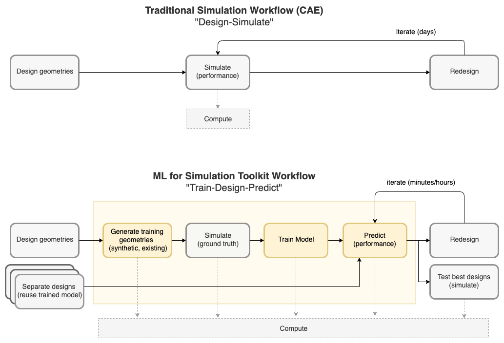

Welcome to AI Surrogate Models in Engineering on AWS (MLSimKit) 0.1.1¶
AI Surrogate Models in Engineering on AWS (project name: ML for Simulation Toolkit or MLSimKit) provides engineers and designers a starting point for near real-time predictions of physics-based simulations using ML models. It enables engineers to quickly iterate on their designs and see immediate results rather than having to wait hours for a full physics-based simulation to run.
The toolkit is a collection of commands and SDKs that insert into the traditional iterative design-simulate workflow (see diagram below), where it can take days to run a single cycle. Instead, the “train-design-predict” workflow becomes an additional choice to train models on simulated ground truth and then use the newly trained models for predictions on new designs in minutes.
{kind=link}
Get Started¶
Tutorials¶
Explore tutorials that dive deeper into specific use cases for training on larger datasets.
External Datasets¶
Learn about external publicly available datasets that are supported by the MLSimKit tutorials.
User Guides¶
Discover comprehensive user guides to configure and tune model parameters for training on your custom datasets. Learn how to use the MLSimKit SDK to build your own applications and setup MLFlow for tracking results with a UI dashboard.
Developer Guides¶
Customize MLSimKit by learning how the code is structured and the various modules to modify for your own custom use cases.